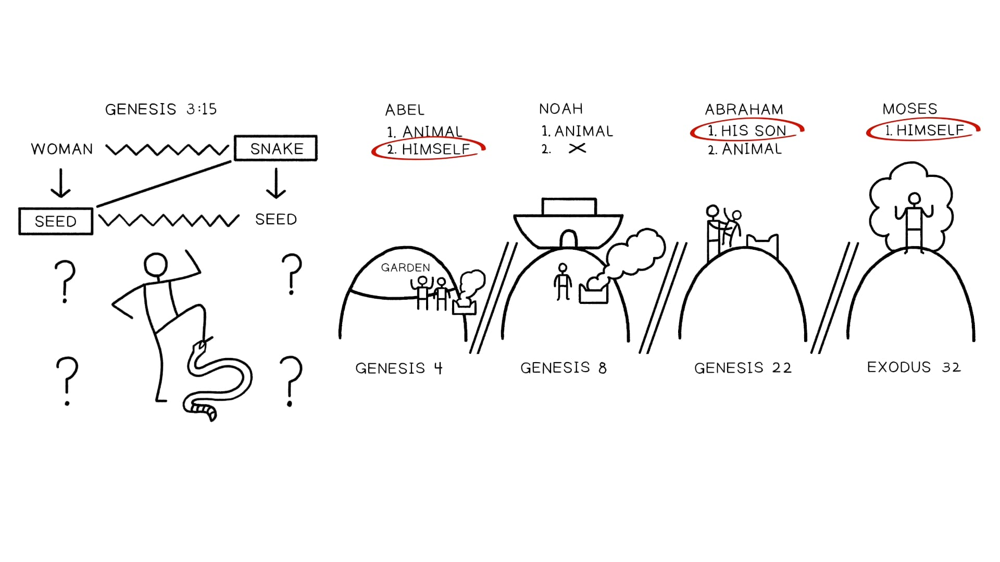

Noah’s Sacrifice and God’s Blessing
Key Takeaways
- The reason for the flood—the condition of the human heart—becomes God’s reason to never again flood the Earth.
Even though the land is cursed, God chooses to never again treat the land as though it is cursed. Noah is one example in the larger pattern that leads to the ultimate anointed one who will suffer on behalf of the wicked—a righteous one who will die for the wicked—and make atonement to open the
- way back to Eden.
Noah’s Sacrifice and God’s Response: Translation and Literary Design of Genesis 8:20-22
20 And Noah built an altar to Yahweh, a
- and he took from every pure animal b
- and from every pure bird b'
and he caused to go up a going-up offering on the altar . a'
21 And Yahweh smelled the soothing smell;
The Curse Is Rescinded and No Death
and Yahweh said to his heart , a
- “ I will never again curse the ground on account of humanity, b
because the purpose of the heart of humanity is bad from his youth; a
- and I will never again strike all life, as I just did. b'
Cosmic Order Is Restored
22 For all the days of the land,
- seedtime and harvest,
- and cold and heat,
- and summer and winter,
- and day and night
- will not stop.”
The Blessing Is Released and Life Is to Bear Fruit and Multiply
And Elohim blessed Noah and his sons
and he said to them,
| "Be fruitful and multiply and fill the land." | ||
| Genesis 8:20-22. Translation and Literary Design by Tim Mackie for BibleProject Classroom Adam to Noah (2020). The Hero’s Sacrifice in Mesopotamian Flood Accounts The sacrifice of the flood hero motif is preserved in all of the existing Mesopotamian flood narratives. |
||
| I set up an offering stand on the top of the mountain. Seven and seven cult vessels I set out, I heaped reeds, cedar, and myrtle in their bowls. The gods smelled the savor, The gods smelled the sweet savor, The gods crowded around the sacrificer like flies. Gilgamesh Epic, Tablet 11 |
||
| He put down [ ... ], Provided food [ ... ] [ ... ] The gods smelt the fragrance, Gathered like flies over the offering. Atrahasis Epic, Tablet 3 |
||
| (140 ́) Ziusudra, being the king, stepped up before Utu kissing the ground (before him). The king was butchering oxen, was being lavish with the sheep [barley cak]es, crescents together with [ ... ] [ ... ] he was crumbling for him [ ... ] [juniper, the pure plant of the mountains] he filled [on the fire] Eridu Genesis |
||
| He disembarked, accompanied by his wife and his daughter together with the steersman. He prostrated himself in worship to the earth and set up an altar and sacrificed to the gods. Berossus’ Babyloniaca |
||
| However, the function and result of the offering in the Mesopotamian accounts is different. This theme receives the most treatment in the Gilgamesh Epic. |
||
| The gods crowded around the sacrificer like flies. As soon as Belet-ili arrived, She held up the great fly-ornaments that Anu had made her in his infatuation, “O these gods here, as surely |
| as I shall not forget this lapis on my neck, I shall be mindful of these days, and not forget, forever! Let the gods come to the offering, But Enlil must not come to the offering, For he, unreasoning, brought on the deluge, And reckoned my people for destruction!” Suddenly, as Enlil arrived, He saw the boat, Enlil became angry, He was filled with fury at the gods. “Who came out alive? No man was to survive destruction!” Ninurta made ready to speak, and said to the warrior Enlil, “Who but Ea could devise such a thing? For Ea alone knows every craft.” Ea made ready to speak, and said to the warrior Enlil, “You, O warrior, are the sage of the gods, How could you, unreasoning, have brought on the deluge? Impose punishment on the sinner for his sin, On the transgressor for his transgression ...” Gilgamesh Epic, Tablet 11 |
||
| as I shall not forget this lapis on my neck, I shall be mindful of these days, and not forget, forever! Let the gods come to the offering, But Enlil must not come to the offering, For he, unreasoning, brought on the deluge, And reckoned my people for destruction!” Suddenly, as Enlil arrived, He saw the boat, Enlil became angry, He was filled with fury at the gods. “Who came out alive? No man was to survive destruction!” Ninurta made ready to speak, and said to the warrior Enlil, “Who but Ea could devise such a thing? For Ea alone knows every craft.” Ea made ready to speak, and said to the warrior Enlil, “You, O warrior, are the sage of the gods, How could you, unreasoning, have brought on the deluge? Impose punishment on the sinner for his sin, On the transgressor for his transgression ...” Gilgamesh Epic, Tablet 11 |
||
| The goddess Belet-ili holds up her fancy fly jewel necklace as a reminder to the gods that the flood should never happen again. In her speech, she wants the gods to learn a lesson from the flood. The indiscriminate slaughter of humanity is not in their own best interests because they almost starved without sacrifices. The final line shows the gods’ new policy: Each sinner will face the consequences of their own actions. How different from the theology of the flood story. Noah’s Sacrifice and the Theology of the Flood Narrative Like Abel, who was the first human to offer animal sacrifices at the door of Eden (see Gen. 4:7), Noah offers animal sacrifices at the door of the ark, which was a floating micro-Eden. Noah’s sacrifice does not placate a volatile and angry deity. Rather, his obedience and faithfulness to God’s instructions qualify him to be a new ’adam, a royal priest who offers up a valuable sacrifice on behalf of the new humanity. Noah’s priestly role was hinted at in Genesis 7:1-3 when he was directed by God to select ritually pure and impure animals to take onto the ark. Their purpose was not made clear, but now we find that these pure animals were qualified for a sacrifice of thanks. Noah’s sacrifice is a “going-up offering” (‘olah / הלוע), which is traditionally translated as a “whole burnt offering” (see the description in Lev. 1). It was the most costly offering because the worshiper did not receive back any parts of the animal for a feast. The going-up offering is the total surrender of a precious substitute who ascends before God’s heavenly temple as a righteous and blameless representative to appeal to God on behalf of the offerer. In Noah’s case, |
| he is already a righteous and blameless person, but his offering is not just for him but for all creation and all humanity yet to be born. The result of Noah’s sacrifice is made more clear by recognizing the hyperlinks back to the opening of the flood story. In Genesis 6:5-6, God states his reasons for bringing the flood. Bookends of the Flood Narrative |
||
| Genesis 6:5-6 Instructor's Translation 5 And Yahweh saw (הוהי אירו) that great was the evil of the human in the land and all the purpose of the plans in his heart was only evil all the day (ער קר ובל תובשחמ רצי לכ) . 6 And Yahweh regretted (םחנ) that he made the human in the land, and he was grieved in his heart (ובל לא) . |
||
| Genesis 8:21 Instructor's Translation And Yahweh smelled (הוהי חריו) the pleasing smell, and Yahweh said to his heart (ובל לא) , “I will not continue to treat as cursed any more the land (המדאה), on account of the human (םדאה), for the purpose of the heart of the human is evil from his youth (וירענמ ער םדאנ בל רצי) and I will not continue any more/again to strike all life as I have done.” |
||
| Genesis 8:21 is a hinge-hyperlink text that is reaching back to strategic points in Genesis 1-8 and drawing the themes together into a coherent whole. Because of Noah’s obedience and atoning sacrifice, God is no longer going to treat the land as cursed because of humanity’s rebellious evil; rather, he is going to treat it as blessed despite the grim reality of human evil. |
||
| Genesis 8:21 Instructor's Translation and Yahweh said to his heart (ובל לא), “I will not continue to treat as cursed (ללקל) the land, on account ( רובעב) of the human , for the purpose of the heart of the human is bad from his youth and I will not again strike all life as I have done . |
||
| Genesis 3:17 Instructor's Translation Cursed (הרורא) is the ground on account of you (ךרובעב) , in grief (ןובצעב) you will eat from it all the days of your life. |
||
| Genesis 5:29 Instructor's Translation And he called his name Noah (חונ), saying “This one will give us comfort (םחנ) from our work and from the grief (ןובצע) of our hands from the land which Yahweh has cursed” (הררא) |
||
| Genesis 6:5-7a Instructor's Translation 5 And Yahweh saw … that all the purpose of humanity’s heart (ובל) was only evil all the day … 6 And Yahweh was grieved (בצעתיו) in his heart (ובל לא) … 7 and said “I will wipe (החמ) away humanity … for I regret (םחנ) that I have made them … for the land was filled with violence (סמח). ” |
||
| Is There No More Curse on the Ground? |
| Notice how God’s words in Genesis 8:21b and 8:21d are set in poetic parallelism: Verse 21b: I will not continue / to curse again the land , / on account of the human Verse 21d: I will not continue / again to strike all life / as I have done The words curse/strike are set in poetic parallelism, along with the land/all life . This means that “treating as cursed” has a specific meaning in this context because it is synonymous with the “striking of all life” that took place in the flood. There are multiple Hebrew words for “curse.” Two of them appear in Genesis 1-11, and there is an important difference between them. 1. “To curse” = Hebrew ’arar (ררא) means to declare someone’s misfortune/to effect their misfortune. |
||
| Genesis 3:14 NASB The LORD God said to the serpent, “Because you have done this, cursed are you more than all cattle, and more than every beast of the field; on your belly you will go, and dust you will eat all the days of your life ...” |
||
| Genesis 3:17-18 NASB* 17 Then to the human he said ... “Cursed is the ground because of you; in toil you will eat of it all the days of your life. 18 Both thorns and thistles it shall grow for you; and you will eat the plants of the field ...” *Key Words Adapted by Teacher |
||
| Deuteronomy 28:20 NASB The LORD will send upon you curses, confusion, and rebuke, in all you undertake to do, until you are destroyed and until you perish quickly, on account of the evil of your deeds, because you have forsaken me. |
||
| 2. “To treat as cursed” = Hebrew qalel (ללק) means to treat someone with contempt, to treat them as one who has been cursed. |
||
| Genesis 16:5 NASB* And Sarai said to Abram, “May the wrong done me be upon you. I gave my maid into your arms, but when she saw that she had conceived, I was treated as cursed/despised (ללק) in her sight. May the LORD judge between you and me.” *Key Words Adapted by Teacher |
||
| Leviticus 19:14 NASB* You shall not treat as cursed/despise (ללק) one who is deaf, nor place a stumbling block before the blind, but you shall revere your God; I am the LORD. *Key Words Adapted by Teacher |
||
| 2 Samuel 16:13 NASB* So David and his men continued along the road while Shimei was going along the hillside opposite him, treating him as cursed (ללק) as he went and throwing stones at him and showering him with dirt. |
| *Key Words Adapted by Teacher | ||
| *Key Words Adapted by Teacher | ||
| There are a few places where both words are used together, so the slight difference between them becomes more clear: qalel means to treat someone like they are ’arar, which means to speak about or to act toward them as if they are actually in a cursed state. |
||
| Genesis 12:2-3 NASB* 2 And I will make you a great nation, and I will bless you, and make your name great; and so you shall be a blessing; 3 and I will bless those who bless you, and the one who treats you as cursed (ללק) I will curse (ררא). And in you all the families of the earth will be blessed. *Key Words Adapted by Teacher |
||
| Exodus 22:28 NASB* Do not treat God as cursed/with contempt (ללק) or curse (ררא) the ruler of your people. *Key Words Adapted by Teacher |
||
| This gives us a helpful profile of the word qalel. It can refer to actions or words that treat someone as if they were in a state of misfortune, disaster, and death. This gives more significance to God’s words in Genesis 8:21. Noah’s Sacrifice and the Release of Divine Blessing The literary design of Genesis 8:21-9:1 keys into important themes in the Genesis story. The Outer Frames (Gen. 8:21, 9:1) The outer frames of God’s speech match each other in blessing/curse vocabulary. The curse of the flood, a divine judgment, is rescinded and the universal blessing is released. In this way, Noah is portrayed as an image of the “seed of the woman” in Genesis 3:15 who undoes what the snake has done and so restores the Eden blessing to all humanity. The Inner Frames (Gen. 8:22) The inner frame is a poetic statement about the order of creation established in Genesis 1:3-31. The flood was the undoing of cosmic order as the boundary between Heaven and Earth collapsed in on itself. Here God makes a promise (marked by a covenant sign in 9:8-17) that creation order will endure, specifically the annual, seasonal, and daily rhythms that make human flourishing possible. The Conclusion (Gen. 9:1) God announces that even though the land is under a curse (’arar), that is, in a state of misfortune because of human folly and violence (Gen. 3:17; 5:29), God is not going to treat the land and its people as under the |
| curse. In Genesis 3-6, humanity has polluted God’s good world with innocent blood, resulting in the cosmic collapse of the flood. But instead of letting the land remain under that curse, God is going to give the gift of cosmic stability instead. He will maintain cosmic order so that the seed of the woman can arrive and undo the power of the curse. |
||
| “Salvation through the ark does not fulfill the meaning and destiny of Noah’s name (from Gen. 5:29). Rather, Noah is saved in order to worship, to offer the sacrifice that causes God another ‘repenting’ (םחנ, from 6:8), that is, a ‘rest/comforting’ (חוחינ) that turns curse into blessing. Noah’s priestly mediation is the means by which relief from the toil of the curse ground became a reality. For God as well as for humanity, Noah is the consolation for the fall of Adam.” Morales, Michael (2012). The Tabernacle Pre-Figured: Cosmic Mountain Ideology in Genesis and Exodus. Peeters Publishers. 186. |
||
| When Noah gets off the boat, his sacrifice marks him as the righteous and blameless intercessor who will devote himself to God. God accepts his sacrifice, but he notes that humanity is no different now than before the flood. This is ironic because Noah and his family are the only people around! God’s view of the human condition is vindicated by the following narrative when Noah goes on to replay the sin of Adam and Eve by eating the fruit of a garden, getting naked, and involving himself in a shameful act with his son. This disqualifies Noah from being the fully-fledged seed of the woman of Genesis 3:15, but he does advance the portrait of the the needed deliverer. |
||
| “The text clearly indicates that God’s heart changed towards mankind, though mankind’s heart itself had not changed. Indeed, given that God’s heart has changed while the primary reason for the deluge (man’s heart) has not, the deity, apart from an atoning sacrifice, would be open to the charge of capriciousness. The reader would wonder: ‘Was the flood in vain?’ That is, did the deluge accomplish anything if the original circumstance and conflict remains? Failing to connect God’s change of heart to the sacrifice, one is left with the impression that God somehow matured through the experience of the flood ... All of these charges are avoided when the change of heart is understood as wrought by Noah’s pleasing sacrifice ... Until God’s heart is changed by the sacrifice—even after the deluge, there is no divine resolve toward forbearance and blessing. The pivotal and efficacious sacrifice of Noah ... changes mankind’s position from cursed to blessed.” Adapted from Morales, Michael (2012). The Tabernacle Pre-Figured: Cosmic Mountain Ideology in Genesis and Exodus. Peeters Publishers. 183-185. |
||
| Reflection Question The reason God brought the flood—the evil purposes of the human heart—is now the reason God will never again strike all life with a flood (Gen. 8:21). What significant act is different after the flood? |
| 19: Session The Pattern of the High Place Sacrifice |
||
| Key Takeaways Noah’s sacrifice—on the high place in front of the door of the divine refuge—is part of a larger literary pattern developing the theme of sacrifice in Genesis and beyond. God’s response to Noah’s sacrifice eliminates simplistic notions of God’s wrath or God’s mercy. It’s both, not one or the other, and this drives the drama of the biblical story forward. Noah’s Sacrifice and the Design Pattern of Costly Commitment Noah’s sacrifice and the turn of God’s will from judgment to generous blessing is a paradigmatic event in the Hebrew Bible. It sets the template for the unfolding drama as God continues to work with the seed of the woman, which will replay Adam and Eve’s sin, generating conflict that leads to violence and a flood of divine judgment, creating an ultimate crisis of decision. Will humanity surrender what is most precious in order to release divine blessing into the world? |
||
| “As disobedience is decisive in the loss of life in Genesis 3, so obedience to the command is decisive in Genesis 12:1-3 and in the flood story. Noah’s righteousness in 6:8-9 is a future reality that becomes actual only as Noah realizes it by his obedience ‘before Yahweh’ (7:1). When was this righteousness effected? [A]t the end of the flood when Noah’s survival is first assured. Noah becomes by virtue of the acceptance of his sacrifice a tsaddiq in relationship to Yahweh. Here also the reason for the righteousness of Noah becomes clear: ... not simply for the salvation of Noah’s immediate family, but the salvation of all humanity and living things. As Abraham received in Genesis 12:1-3 a command followed by a promise which incorporates a further command to be a blessing for all peoples, so Noah received a command followed by a promise that implies he functions as a tsaddiq for the salvation of humanity.” Clark, W. Malcom (1971). “The Righteousness of Noah”. Vetus Testamentum, 21 (3). 273-274. |
||
| “But it is not simply that an extraordinary act of obedience by a righteous man [Abraham] leads to extraordinary blessing. It is that one man’s obedience climaxes in an act of sacrifice and thus leads to extraordinary blessing ... The faithful obedience of Noah culminating in his sacrifices after the flood changed God’s disposition toward sinful humanity. Similarly Abraham’s obedience guaranteed the future of his descendants and that through them blessing should come to all nations.” Wenham, Gordon (1997). “The Akedah: A Paradigm of Sacrifice.” Journal of Biblical Literature, 116 (3). 102. |
||
| The Design Pattern of Costly Commitment Throughout Genesis and Exodus |
The promise in Genesis 3:15—of a seed of the woman who will triumph over the snake but be struck in the process—sets the outline for a pattern of costly commitment that develops throughout the rest of Genesis and
into Exodus.
- Abel on the mountain of Eden (Gen. 4:1-8) Noah on Mount Ararat (Gen. 8:20-22)
- Abraham and Isaac on Mount Morah (Gen. 22:1-14) Jacob loses Joseph (Gen. 37) Pharaoh loses his son in Egypt (Exod. 12:29-30)
- Moses at Mount Sinai (Exod. 32)
With each iteration of the pattern, we see small differences that begin to sketch the portrait of a chosen one who will come and give his own life on behalf of the many.

The Design Pattern of the High Place Sacrifice. Illustration created by Tim Mackie for BibleProject Classroom:
- Noah to Abraham (2020).
Reflection Question
How would you describe the way that this pattern of high place sacrifices ultimately leads to the anticipation
of Jesus’ self-giving, atoning sacrifice?
SESSIONS 20-22
Unpack the final scenes of the flood story, and consider how the flood story shows up
in modern conversations.